A · GEO＋Braun 基础款
平阔主面／清楚退层／全域跑台
多角度原图 ↗A为GEO＋Braun平阔框面，采用全域跑台；C为IBM复古短凹坑，保留前端上置电机盖。两款沿用平表头、圆角方形扶手与当前折叠要求，安全锁和安全绳直接落实在渲染中。
| 款式 | 主面与细节 | CMF与电机布局提议 |
|---|---|---|
| A · GEO＋Braun | 平阔主面、黑色内退层、克制外缘与内圆角。 | 暖白缎面壳体、炭黑细纹内层、少量缎面金属连接圈；全域跑台，跑台上方无电机盖。 |
| C · IBM复古 | 平阔框面，局部设置成组短横向凹坑，保留实底。 | 浅暖灰细哑光塑壳、炭黑功能件、原金属连接圈；前端电机盖目标高出相邻跑带工作面约30mm。 |
GEO的框面秩序与Braun的圆角体块、黑白功能分区相结合。立柱和侧栏保持平阔主面，边缘克制收口；全域跑台取消上方电机盖。

立柱上段和跑台后端设置成组短横向凹坑，两端圆钝、浅凹实底、等距排列。前端保留上置电机盖，目标高出相邻跑带工作面约30mm；凹坑数量、盖体包络与工艺仍待核对。

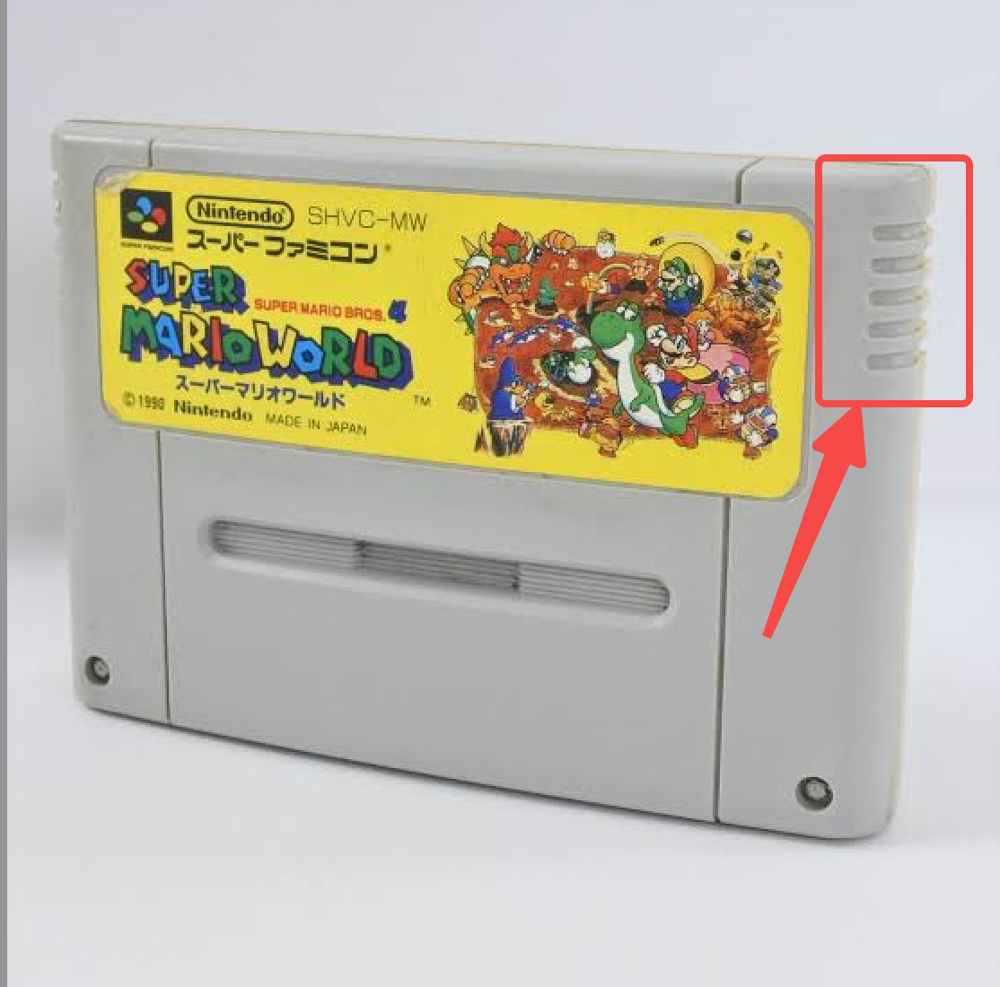
直接造型依据为本张卡带红框处的短凹坑。「IBM复古款」是本方案名称，表达用户指定的80年代电脑壳体联想，不将这张卡带误标为IBM产品。
本轮附图把Y形头部下方的分界指出来了。原始资料负责确定对象关系；新外观负责包覆它。切口可见，仍不足以仅凭图片确定准确轴心、锁扣和行程。
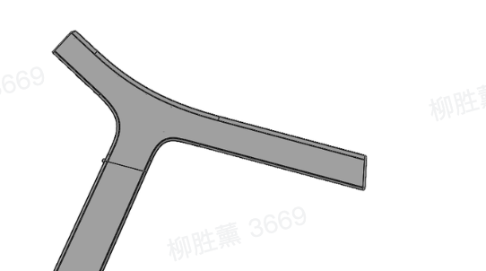
完整原图保留。切口边缘的小凸起也应对照原件，不能直接当成精确扳机结构。
打开完整原图 ↗
用真实分体与配合面核对轴线。此截图与新侧图视向相反，不作同向线性对比；既有姿态值不能直接用于UOK迁移后的结构。
打开原始CAD截图 ↗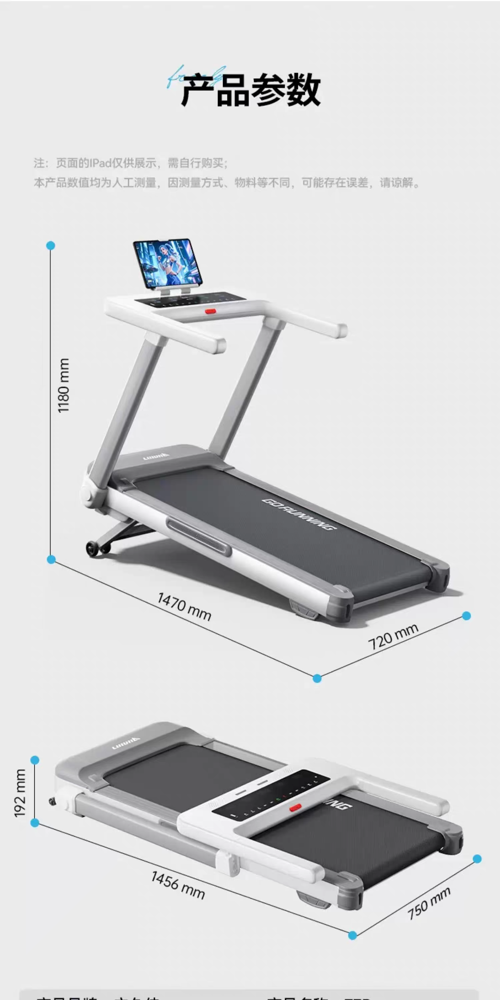
原图标示使用态 1470 × 720 × 1180 mm，折平 1456 × 750 × 192 mm，且注明人工测量误差。这些属于原机，不是凌序升级版尺寸。
打开完整参数原图 ↗另看Z7Pro原根部局部几何与旧演示 ↗ 用于查找根部固定座、转轴、销与压簧；只是根部局部旧推演，不是UOK上下轴联动验证，内部完整传力链路仍待厂家资料。
用户转述：厂家计划将同厂不同品牌UOK的一键折叠方案移植到凌序。以下直接看原GIF与六个关键帧；这是一段渲染动作演示，没有手或实物操作。
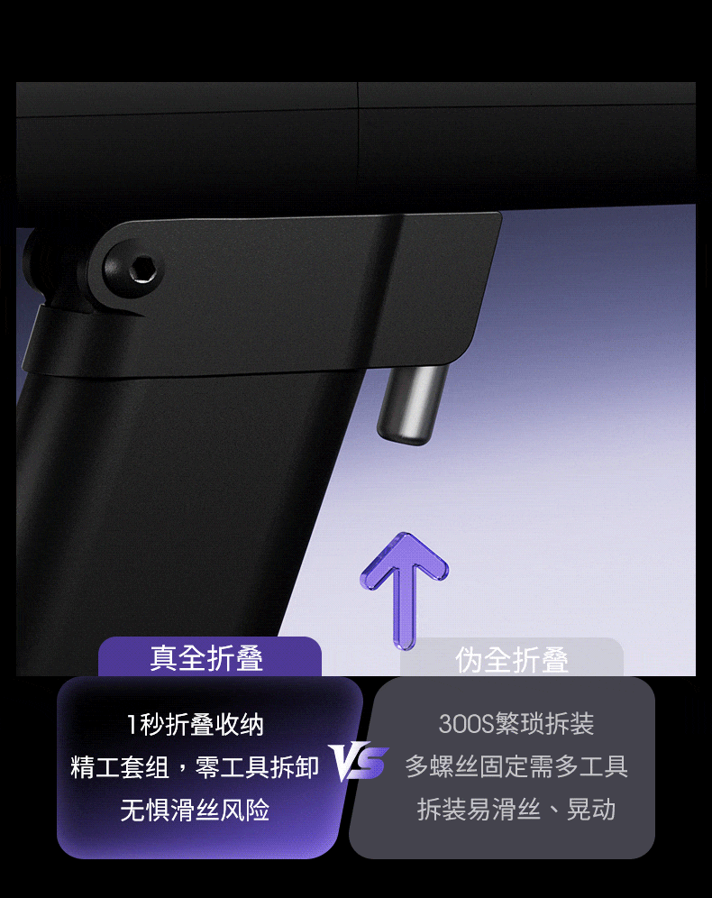
立柱向跑带与机尾放倒时，头部相对立柱改变夹角，扶手与操作面大致保持水平。头部、立柱与跑台应分别建对象，保留上下两处转动关系。
内部联动、真实施力、阻尼与再次锁止没有展示，不能称「按一下自动下降」。GIF时间是文件播放时间；片中未展示托架完全收平、竖放及重新展开。
凌序已明确：头部反向折叠，原本小扳机沿用。UOK银色件只作另一产品的动作参考，不替换凌序的小扳机，也不证明迁移已经实现。
同事可以先做外观分件与运动空间模型。轴线、锁止与传力从原CAD、样机和厂家资料中取值；未拿到的数据保持待定，不用渲染图补成精密机构。
下图仅表达装配层级，不表达轴位、尺寸、方向或已实现的联动。
| 独立总成 | 建模时落实 | 核对依据与待定项 |
|---|---|---|
| 跑台与长侧板 | 共用平阔外框、内侧黑色退层与真实端壳分件；A采用全域跑台，C增加局部短凹坑并保留前端上置电机盖，目标高出相邻跑带约30mm；不恢复小S流线。 | 原CAD确定外包络与装配。主面、层差、壁厚待结构核对；侧板不能跨接固定座、活动柱及撑杆。 |
| 左右活动立柱 | 平阔外侧面，圆润边缘，内侧黑色收边；与根部固定座分开。 | 下轴位置、轴套和固定座用真实几何核对；左右同步方案由厂家提供。 |
| 活动头部／扶手 | 表头顶面与扶手基本持平，不上扬；在Y形下端横切口处分开，转动时关节真实打开。 | 头部反向折叠已定；准确上轴、止挡、锁位与扫掠净空仍待结构核验。 |
| 显示模块 | 默认齐平朝上。可行时仅显示模块独立小幅翻起，不带动壳体改变角度。 | 破坏平整或整体一致性则不翻；两版原屏并列保留，安装尺寸以真实组件核对。 |
| 中央窄立面安全锁 | 红色安全锁与安全绳连接点安装于表头朝跑者的中央白色窄立面、黑色顶边下方；两款渲染均须直接显示，表头下底面留空，独立于折叠小扳机。 | 按当前渲染核对可见位置；锁座、绳路、拉脱方向、可及性及折叠让位待工程核验。 |
| 原小扳机 | 单独对象，保留手指进入、扳动、回位与防误触空间。 | 沿用原件要求已定。图中仅预留位置示意，位置、形状与行程以原件测绘为准。 |
| 握持面／连接圈／端盖 | 统一圆角方形截面，平面和四角圆角清晰；R5材质直接切齐，不做圆柱或圆帽。 | 四种已确认材质继续保留；本轮几何改动待评审，握持尺寸与圆角由CAD和人体核对。 |
| 抬升架／轮组 | 与底盖分开，预留实际撑杆扫掠；抬升沿原轴，轮组保持接地。 | 工作面目标15°；几何、行程、接地及承载需分别核验。 |
| 线束与底部接口 | 上端反向后留线束通道；插拔电源留弯线空间；底镜采用贴片路线。 | 线长、弯曲余量、接口干涉待定；镜面基材与成像待样品核对。 |
逐态显示横切口、上下轴、头部与立柱的不同色块，以及扫掠空间。中间态不表示已确认的动作先后；两轴耦合关系需厂家确认。
重点看：头部—立柱、头部—跑带、扶手—机尾、接头—柱壳、底盖—撑杆、电源—轮组。图形动画辅助讨论，不证明锁止、受力与防夹成立。
默认嵌入平表头、齐平朝上。显示模块能否独立小翻另作核验，壳体保持原角度。两版保持各自原比例，不重画、裁切或拉伸；尚未二选一。

1280 × 319 px · 约4.01 : 1

2508 × 627 px · 4.00 : 1
参考说明汇集分件、动作观察、参数来源与待核验项。先建立真实运动骨架，再完成外观壳。
放大看真实节点、分件与表面，避免把材质印象当结构。Ossby共14张来源图；Braun同款完整图1张，另有6处原图细节窗口。所有参考原图均保持原始像素，未AI补画。
白壳黑边，左下段同样可见真实横向分件。作者、首发与量产身份尚未核实，不归为已确认历史量产产品。同源图片出处
13张长边1920–3840像素，另保留720像素官方折叠白底图。点击进入大图，可切换原始像素。
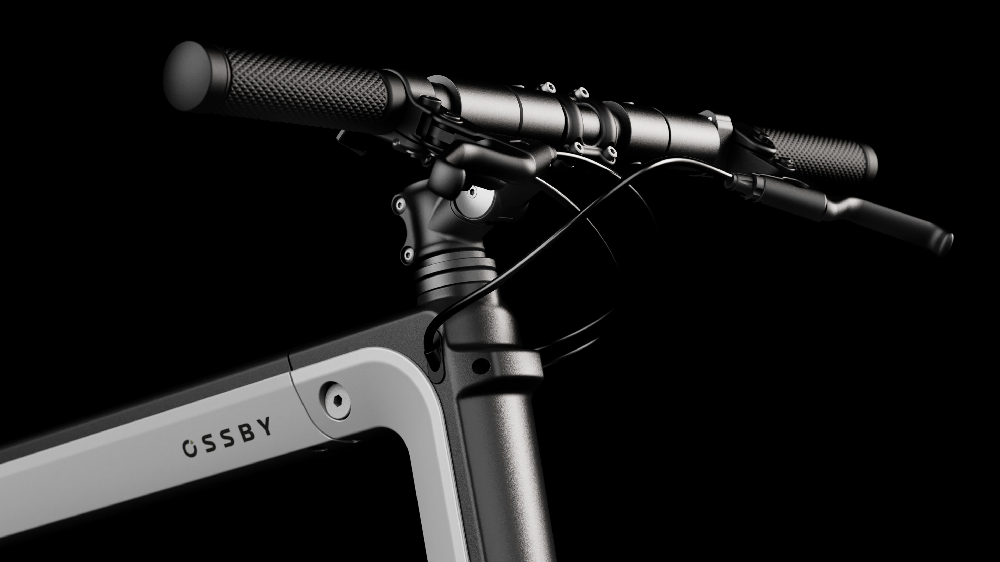
放大查看 ↗ 放大查看 ↗
放大查看 ↗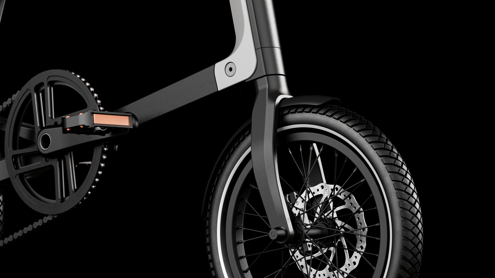
放大查看 ↗ 放大查看 ↗
放大查看 ↗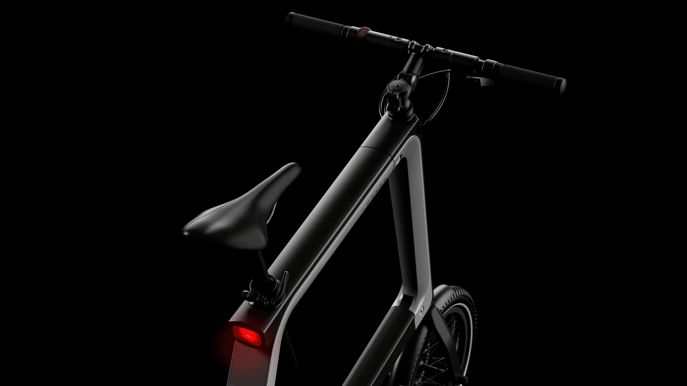
放大查看 ↗ 放大查看 ↗
放大查看 ↗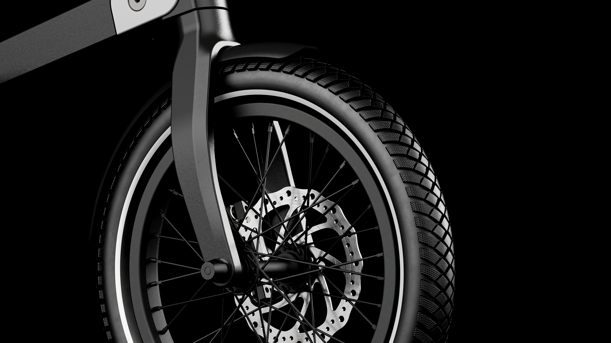
放大查看 ↗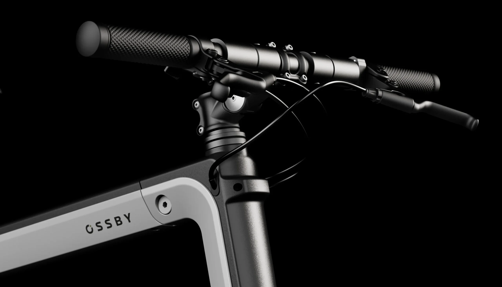
放大查看 ↗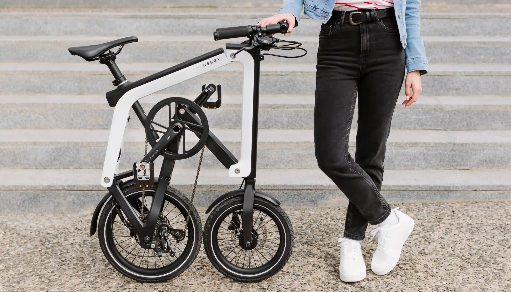
放大查看 ↗ 放大查看 ↗
放大查看 ↗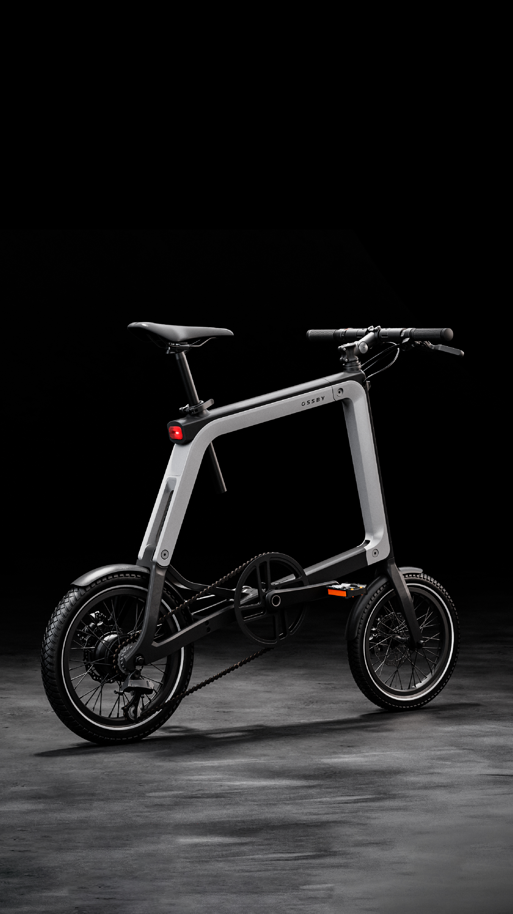
放大查看 ↗ 放大查看 ↗
放大查看 ↗六处窗口均来自同一张3840 × 3840原图，不是新增照片或其他视角。
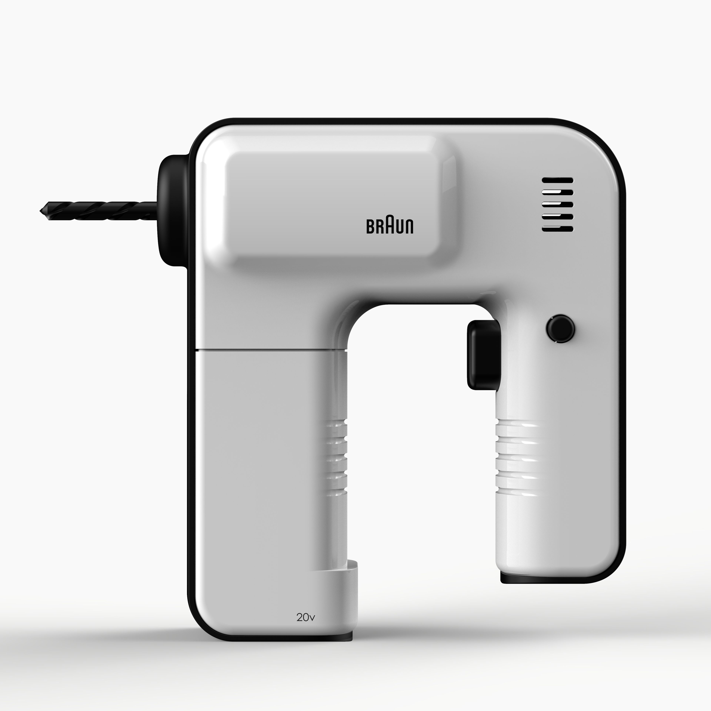
放大查看 ↗